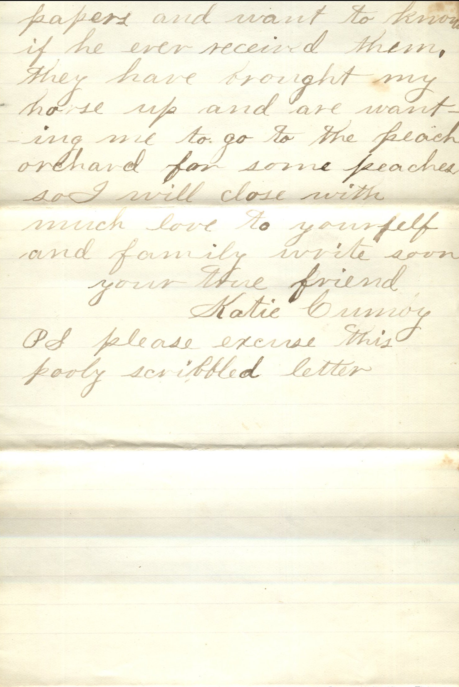
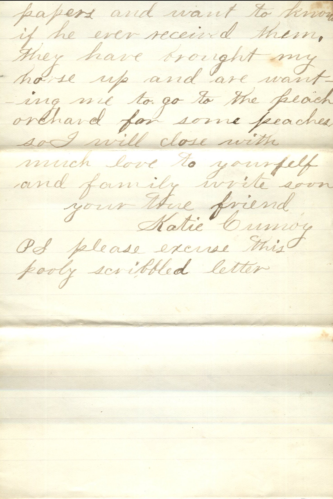

From: Katie Cumoy, To: Jeanette Knox Chandler

 

From: Katie Cumoy, To: Jeanette Knox Chandler Mailed From: Mesquite, Texas on August 10, 1884
Miss Nettie Knox Pearl, Ill Pike Co
Mesquite, Texas Aug 10th 1884 Miss Nettie Knox Pearl, Ills. Dear Friend, I received your most welcome letter some time ago. Hope you will excuse my long delay about answering and I will be more punctual in the future. Ma has been in bed sick for over a week it seems as though she will never be well anymore. Will is down with typhoid malarial fever. He has been down over two weeks and is able to sit up in bed now. Since I received your letter I have been having a good time going to meeting there. Have been having meeting two weeks. The Babtise and Presbyterians both having meeting, at once and the churches are not more than two hundred yards apart. They shouted so loud I believe they could have been heard a mile. The first night I was scared half to death for fear that they would get to beating one in the back. I have so much work now that I can scarcely get time to write any more. We are putting up hay and I am going to singing and taking music lessons and it keeps me stirring to get my work all done. I have just finished one letter before yours, and I have two more to write this evening. Tell Ella that I will be sure and write to her before long. Do you ever see Carrie Loandess. I have not heard from her in a long time. So many that have seen your picture have complimented it highly. Tell Ella that I would be pleased to get any kind of a picture of her. Sam sent his best wishes to you and the family and says he would love to see you all. He said that he sent your Pa some papers and want to know if he ever received them. The have brought my horse up and are wanting me to go to the peach orchard for some peaches so I will close with much love to yourself and family. Write soon. Your True Friend, Katie Cumoy
Ps. Please excuse this poorly scribbled letter